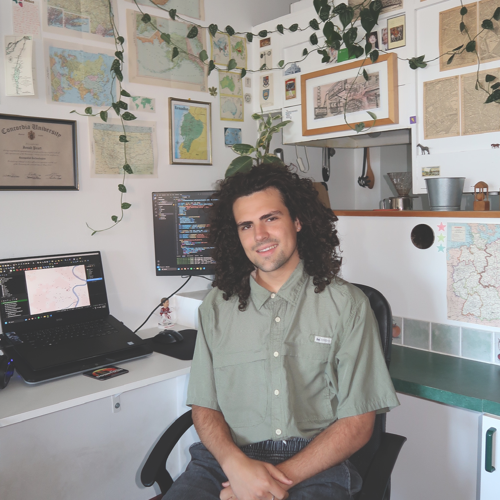

Salut, moi c’est Jonah. J’adore les cartes et travailler avec les données spatiales!
À propos
Je suis passionnée de cartes depuis que je suis toute petite. Ce n'est pas une exagération :
l'un de mes premiers cadeaux d'enfant était un atlas. Née et élevée en Saskatchewan, j'ai
toujours rêvé de voyager et de découvrir le monde, ses villes, sa culture et sa géographie.
Les cartes m'ont aidé à explorer le monde de chez moi.
J'ai déménagé à Montréal pour étudier GIS. C'est là que j'ai découvert un intérêt : les données.
La visualisation spatiale des données est une excellente façon d'expliquer, d'apprendre et de déduire
plusieurs informations sur notre monde. J'ai obtenu un certificat en technologies géospatiales de
l'Université Concordia en mai 2025. En plus des SIG, je m'intéresse à la musique et à l'environnement,
que j'ai intégrés à mes cartes.
J'utilise plusieurs logiciels et libraries différents pour effectuer diverses tâches liées aux GIS, à la
télédétection et aux bases de données. J'apprends toujours de nouveaux environnements pour améliorer mes capacités!

QGIS
ArcGISpro
Python
Geopandas
Pandas
PostgreSQL
Leaflet
R
OpenStreetMap
Mapbox
TerrSet
Javascript
HTML
CSS
Matplotlib
QGIS
ArcGISpro
Python
Geopandas
Pandas
PostgreSQL
Leaflet
R
OpenStreetMap
Mapbox
TerrSet
Javascript
HTML
CSS
Matplotlib